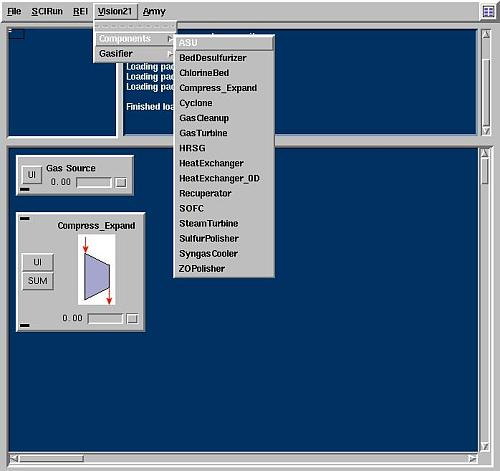
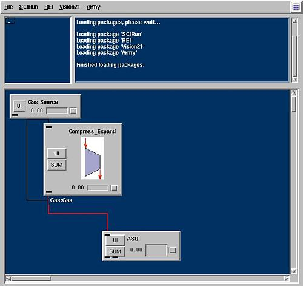
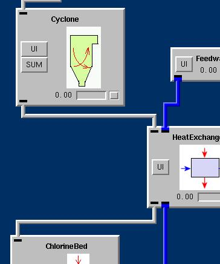
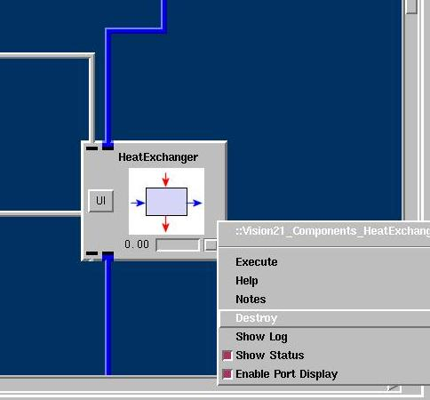

|  | Adding a ModuleTo begin construction of a module network first select a module from one of the module menus (SCIRun, REI, Vision 21) at the top of the screen. Once the selected module appears within the NetEdit frame select the UI module button (when applicable) to complete the required module specification fields. Right-clicking on empty space within the NetEdit Frame also provides a complete menu of all modules in order to quickly add new modules to a network. |
Port ConnectorsTo connect two modules use the middle mouse button (left and right buttons simultaneously on a two-button mouse) to select a module's outlet port. Drag the mouse toward an inlet port of a second module until the desired path is highlighted in red. Upon release the two modules will be linked allowing continuous data flow. Only compatible inlet/outlet ports can be linked. Grey connectors and ports signify gases, while blue connectors and ports signify liquids. (see below) |
 |
|  | Configuring the ModulesOnce each module within the network is correctly placed and connected, configure the modules by clikcing on the UI button. These User Interface screens control unit characteristics such as initial conditions, unit geometry, and process specifications. |
Removing Modules and ConnectionsPlacing the cursor over a module and selecting the right mouse button summons a menu of module-specific options. To remove a module from the NetEdit Frame, select destroy from this menu of options. More than one module can be removed at once by simultaneously selecting and holding the left and right mouse buttons, then dragging the selection box to highlight multiple modules. Now, upon right-clicking, the option Destroy Selected is provided, allowing the user to remove all highlighted modules. All existing connections to destroyed modules are automatically removed as well. In order to remove a single port connector simply place the cursor over the connector itself and select the right mouse button. |
 |